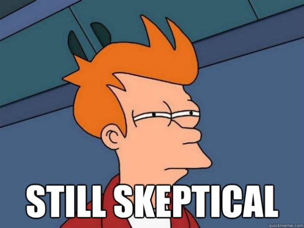
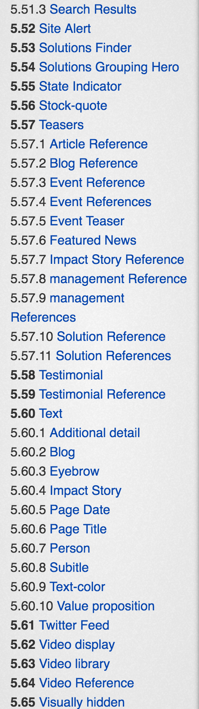

Style Guide Driven Development for Project Managers


Technical Architect, Acquia
D.O: adam.weingarten
github: aweingarten
linkedin: adam.weingarten
Front End Architect, Acquia
D.O: sarahjean
github: sarahjean
linkedin: sarah-thrasher-2379a61b/
What is the problem I have?
Getting Drupal to look the way you want is hard
Takes time to get Drupal looking they way you want
Good front end developers are hard to find
Front end phase longer and riskier
Process for Styling
Client asks for a thing
UX does comps and/or wire frames
Back end Developer builds a bunch of widget
Throws the finished page over the fence to the front-end developer
Front-end developer starts hacking away
WTF is style guide driven development?
Start with visual designs.
Break it apart into visually modular elements
build a small ideal model
don't build a page
Here's the problem
Here is that design exploded into modular elements
Lets take 1 element of the design and develop it.
Need the developer to think about how
to build this
Instead of this
Step 1: Forget Drupal
The horrible traumatic markup, etc does not exist.
This is an optimistic methodology.
Step 2: What does the HTML/Twig look like
Create markup to bring design to life
Use classes that make sense
Step 3: What content will this thing have
Identify the parts that can change
Put those examples into a JSON file
Step 4: Style the above by writing a small sass file.
Step 5: Mix it up and get a style guide!

We'll get back to how
Step 6: Integrate!
Get Drupal to print markup that is consistent with your model.
{% embed "@components/hero/hero.twig" with {
'url': '#',
'logo': 'logo-rev',
'title': 'Drupal GovCon 2017'
} %}
{% endembed %}
This is where D8 and Twig shines
Step 7: Enjoy!
Now we have a styled widget in Drupal
And it's powered by your style guide
Have a beer
Step 7.1: Generalize!
Step 7.2: Multiply!
Step 8: Client threw you a change request!

What do you do?
Make changes to the style guide.
Recompile all the things.
Step 9: Enjoy
Until the next change request.....
We promised to tell you how style guide magic works
Style guide by itself is a simple static site
It's generated via templates and sample data
What makes it a 'living' style guide?
Code is shared between it and your actual site, it isn't just used as a reference
This has referred to mainly the CSS in the past, but with D8 and Twig, your actual template files can be used as well, keeping markup patterns in sync.
Key points
CSS should match between style guide and Drupal theme
All styles used on the site should be pulled into the style guide
A plethora of tools...
There are a number of different tools that can be used to generate the style guide so you will probably want to do a bit of research
Kss Node
Pattern Lab
SC5
Jekyll
Handcoding (A generator is recommended though)
Style Guide Generator Roundup - Susan Robertson
You will also probably want to have a build tool, such as grunt, gulp, npm scripts, etc... these are all very standard parts of the front end toolbox currently
So Why should I care?
Give me a reason or 8.
Validates clients' business requirements
Increases accuracy of estimation
Speeds up development
Increases the quality of deliverables
Builds confidence with change requests
Accelerating the delivery velocity
Building a bigger pool of developers
Integration becomes easier
Validating Clients Business Requirements
Preview styling and markup without a backend
Get feedback
Fix the nitpicks
But wait isn't that just ... Agile?
Supports Concurrent Development
You don't need a Drupal for styling
Increased separation of concerns
Project phases can proceed independently
Splitting up tasks by components as opposed to pages reduces inconsistencies.
More tasks that are smaller sized makes it easier to keep tickets moving.
Easier to test and QA.
Increasing Accuracy of Estimation
By decomposing large tasks into smaller tickets
(Smaller chunks are easier to estimate)
Increasing the quality of deliverables
Splits styling and theming into discrete tasks
By separating task you do each better
Change Requests become easier
Change the model and Drupal changes with it
Building a bigger pool of developers
Tradish front end non-Drupalists can help build the style guide
Twig in D8 or Handlebars in headless more familiar to front enders.
Style guide can be even be created before the main dev team comes on-board
Still need a Drupalist for theming.
Integration becomes easier
Make Aggressive Front-end Changes without fear
Avoid Visual regressions
Style in more testable chunks
Your style guide can be an asset for content creators and future business decisions
Reduce rework now that you have a record of available design components.
Your style guide can also document usages and options that might not be as obvious from the content creation form.
It will be a useful reference for on-boarding new contributors to your project.
Your asset library can be fierce...
Getting Drupal to look exactly the way you want can be hard.
Now you have some tools to help!
Component based approaches to theming
Living style guide
Friday sprint reminder slide
DA asked us to include this.